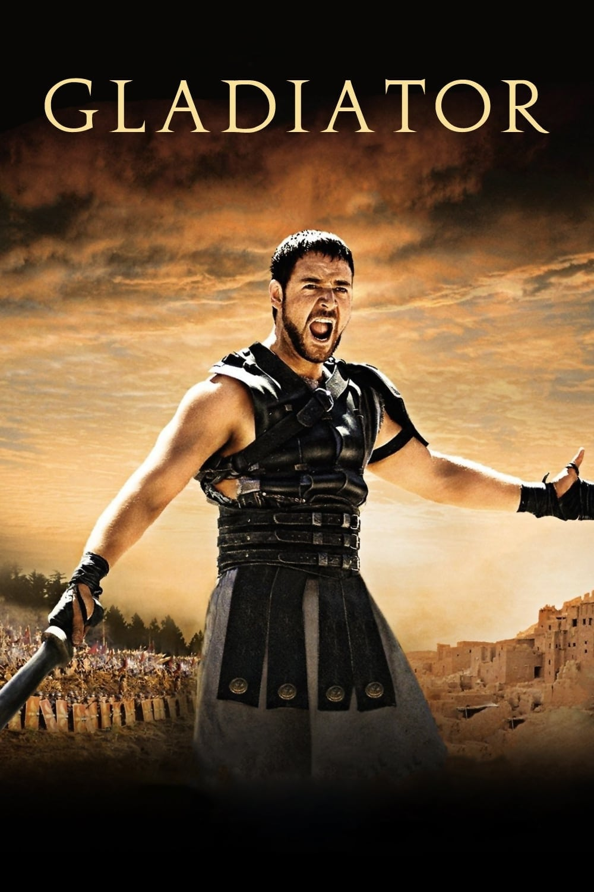

Мировая премьера: 5 мая 2000
Слоган: Гладиатор, который бросил вызов империи.
Сюжет: Великий римский генерал Максимус, преданный вероломным наследником трона, попадает в рабство и становится гладиатором. Снискав себе славу в кровавых поединках, он оказывается в знаменитом римском Колизее, на арене которого он встретится со своим заклятым врагом – новым императором...
Режиссёр: Ридли Скотт
Серия: Гладиатор
В ролях: Расселл Кроу, Хоакин Феникс, Конни Нильсен
| Расселл Кроу | Генерал Максимус |
| Хоакин Феникс | Коммод |
| Конни Нильсен | Луцилла |
| Оливер Рид | Антоний Проксимо |
| Ричард Харрис | Цезарь Марк Аврелий |
| Дерек Джекоби | Сенатор Гракх |
| Джимон Хонсу | Юба |
| Томас Арана | Генерал Квинтус |
| Дэвид Хеммингс | Кассий |
| Ральф Мёллер | Хаген |
| Спенсер Трит Кларк | Луций Вер |
| Томми Флэнаган | Цицеро |
| Дэвид Скофилд | Сенатор Фалко |
| Джон Шрэпнел | Сенатор Гай |
| Омид Джалили | Работорговец |
Бюджет: $ 103 млн.
Кассовые сборы в США: $ 188 млн.
Кассовые сборы в мире: $ 466 млн.
Продолжительность: 2 ч. 44 мин.
Рейтинг: 8.5